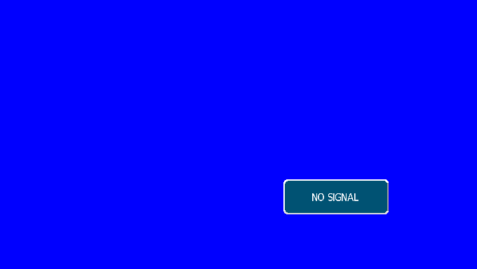

Interactive boot walkthrough
Pick a platform, press play (or drag the slider), and follow the boot stage by stage.
Try the remote (pre-captured frames)
These are real frames the emulator produced after the matching key was sent to the original firmware's key path. Press a key to jump to the captured state.

Remote
Keys map to the raw IR codes identified for the original firmware (MENU 0xFC, UP 0x0B, DOWN 0x0E, LEFT 0x10, RIGHT 0x11, OK 0x0D). Factory, hotel and lock menus were reached by following the firmware's own key sequences.
Gallery
The second platform: Sunplus SPHE8600
Newer Manta LED sets (and the Shivaki STV-24LED14) use a Sunplus MIPS SoC running eCos with DirectFB — a completely different machine. The emulator boots it through the kernel, the flash driver and into the application's start-up assistant; the display path is still being reverse-engineered.
OSD bitmap atlas — recovered from the application image
632 bitmaps are described by a table of 24-byte descriptors (data pointer, palette pointer, size, 8 bpp). The sheet is a contact sheet of the decoded images (a minority still decode as noise: different row stride/format — not solved).

Honest status
| Platform | What works | Not yet |
|---|---|---|
| MStar MSD309 (Manta LCD4214) | Original firmware boots; the real ZUI draws the OSD; GOP scan-out; MENU / SOURCE / INFO / factory / hotel / lock menus; USB player (emulated stick); virtual remote; Qt control centre; save states. | Some GE blend/filter details are labelled hypotheses; live TV picture is synthetic; peripheral coverage is partial. |
| Sunplus SPHE8600 (Manta LED4202, Shivaki) | eCos kernel boot, flash driver + SPI controller model, ~3 MB application load, DirectFB 1.1.0 start-up, interrupt controller decoded, OSD bitmap extraction. | No pixels on screen yet: OSD scan-out registers and real IR input are not modelled. |
Ground rules: never patch the original firmware, never fabricate register responses in strict mode, keep hypotheses opt-in and labelled, keep diagnostic results separate from connected-boot progress and from displayed pixels.
Get it
Binaries and notes are on the Releases page. The repository includes the firmware images used for testing (with hashes and a rights notice); see firmware/README.md.